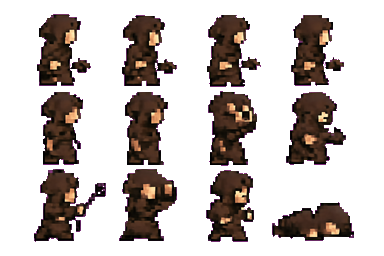
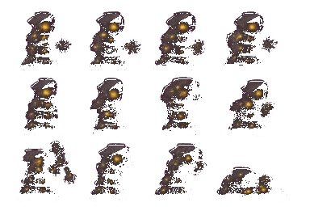
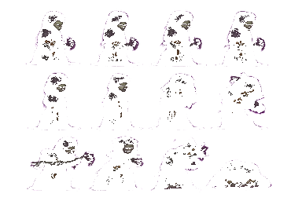
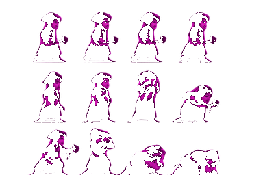

Low-resolution 16-bit era pixel art, strict pixel grid, limited palette, clean readable silhouette.

Low-resolution 16-bit era pixel art, strict pixel grid, limited palette, clean readable silhouette. Dark gothic dungeon palette, torchlit shadows, muted colors with a single warm accent.

Low-resolution pixel art, strict pixel grid, heavy black outlines, high-contrast chiaroscuro, desaturated palette with blood-red accents, grim expressive characters.

1-bit inspired dark pixel art, strict pixel grid, four-color gothic palette, stark silhouettes, candlelight dithering.
